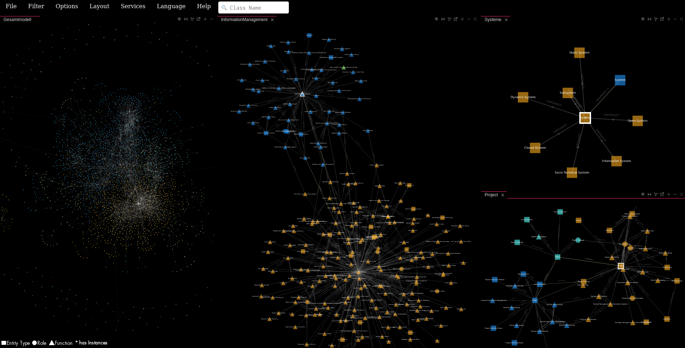

SNIK Graph Troubleshooting

"Javascript is off."
SNIK Graph does not work without JavaScript. Please ensure that JavaScript is enabled.
Some features are not working or are not displayed correctly
SNIK Graph uses some features of ECMAScript 6, so please ensure that your browser is up to date. For example at least Firefox 48, Microsoft Edge 14 or
Chrome 52 should work. Internet Explorer is discontinued and thus not supported. If you still encounter errors,
please submit a bug report.
Mobile
SNIK Graph is not optimized for Smartphones and Tablets, as such both the controls and performance may be unsatisfactory. Feel free to
contribute if you want to improve that.
Submit a Bug Report
If you encounter a technical problems that is not adressed here, please
view the list of known issues and if it is not listed there,
submit a bug report. Always state your browser name, version and operating system, such
as "Firefox 50.0.2, openSUSE Leap".
Disclaimer
SNIK Graph is a research prototype developed part-time by a single researcher who is not a JavaScript expert and as such does not undergo the extensive
testing and development of big projects. As such, contributions and suggestions are always appreciated, However, HTML 5 and
ECMAScript 6 are used by choice and we will not approve changes that compromise the clarity or size of the source code by adding compatibility layers for
outdated browser versions.